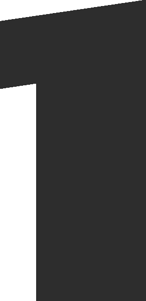

Laboratorio de Diseño + Experimentación con Residuos + Procesos Circulares + Educación Ambiental + Arte + :) + Laboratorio de Diseño + Experimentación con Residuos + Procesos Circulares + Educación Ambiental + Arte + :v +
Adopta un Recicloso
ADOPCIÓN TEMPORAL DE CONTENEDORES RECICLOSOS
El contenedor grande / mediano se recomienda para espacios públicos o privados con afluencia de usuarios.
Objetivo: Acopiar residuos plástico de todo tipo.
Meta: Obtener 50kg de residuos plásticos en 25 / 30 días aprox.
Los contenedores pequeños se recomienda para espacios interior o público continuo a un local o institución.
Objetivo: Acopiar chapitas plásticas.

Talleres de Arte +
Educación Ambiental.
Pronto más información
Murales +
Elementos Reutilizados
Pronto más información
Metamorfosis Sostenible
ELABORACIÓN DE PRODUCTOS CON ALMA E HISTORIAS
Prototipado de mobiliario con plástico reciclado. Resultado del acopio en el contenedor Recicloso, en codiseñado con la comunidad usuaria de la institución en convenio, que sirva para uso de los mismos.